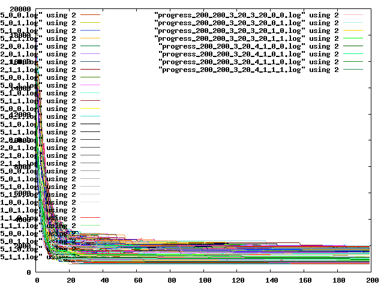

Měl jsem pocit, že ať se snažím, jak se snažím, tak to kolísá kolem tisícovky. Tak jsem se naštval a udělal to trochu jinak.
"Natvrdo" jsem napsal skript, co zkusí asi 2000 různých kombinací se stejným počtem generací, co ale zkouší různé konfigurace, a všechno jsem to vynesl do grafu. (Jestli se skutečně do grafu zaneslo všech 2000 progressů nevim, snad ano)

Co se měnilo byla:
-
populace 20, 50, 200
- první selektor - ruleta, turnaj, chromosome selector
- vlastnosti prvního selektoru
- u rulety nic
- u turnaje velikost (polovina, pětina a desetina populace) a pravděpodobnost (polovina, pětina, dvacetina)
- u chromosomu taky pravděpodobnost (jedna, pětina, dvacetina)
- druhý selector - ruleta, turnaj, chromosom, "standard output"
-
- vlastnosti druhého selektoru - stejně, jako předtim
- jestli se váhy kupiček budou řadit
- jestli se nastaví SetPreserveFittest...
Vše se spustilo jenom dvakrát. Chtěl jsem ještě zkusit různé metriky, ale zapomněl jsem na to a už to dělat nebudu.
Nejhorší byla varianta: populace 20, turnaj, velikost turnaje 4, pravděpodobnost 0.5, druhý selektor chromosome, řazeno, s setPreserveFittest, a dopadlo to rozdíl 1975.
Nejlepší byla varianta: populace 200, turnaj, velikost turnaje 100, pravděpodobnost 0.05, druhý selektor turnaj, velikost 40, pravděpodobnost 0,05, řadí, bere fittest, rozdíl 370, ale zapomněl jsem si uložit nejlepšího.
Je vidět, že u všech možností se rozdíl zasekne někde v půlce a už se nezlepší.
Pak jsem vzal jednotlivé veličiny, co jsem měnil, a vzal jsem průměr rozdílů v nejlepších jedincích s různými hodnotami dané veličiny - snad to píšu dost jasně, prostě jsem chtěl zjistit, jak různé možnosti zlepší nebo zhorší rozdíl.
U populace je nepřekvapivé, že větší znamená lepší výsledek.
| 200 | 860.464285714286 |
| 50 | 1104.55769230769 |
| 20 | 1307.94505494505 |
První selektor je nepatrně lepší chromosome.
| chromosome | 1082.66865079365 |
| turnaj | 1092.73346560847 |
| ruleta | 1100.25 |
U těch, co měli jako první turnaj, je o něco lepší menší turnaj.
| 0.1 | 1089.39285714286 |
| 0.2 | 1093.33928571429 |
| 0.5 | 1095.46825396825 |
... a menší pravděpodobnost.
| 0.05 | 1083.69841269841 |
| 0.5 | 1094.47619047619 |
| 0.2 | 1100.02579365079 |
U těch, co měli chromosome, je o něco lepší větší pravděpodobnost.
| 1/1 | 1069.33333333333 |
| 1/5 | 1079.60714285714 |
| 1/20 | 1099.06547619048 |
Jako druhý selector je nejlepší ten standardní.
| standardní | 1047.37820512821 |
| chromosome | 1089.00213675214 |
| ruleta | 1095.88461538462 |
| turnaj | 1095.95299145299 |
Pokud bych bral jako druhý selektor turnaj, nejlepší je vzít velikost jednu pětinu.
| 0.2 | 1082.73717948718 |
| 0.5 | 1098.31623931624 |
| 0.1 | 1106.80555555556 |
A pravděpodobnost jednu polovinu.
| 0.5 | 1092.90384615385 |
| 0.2 | 1096.62179487179 |
| 0.05 | 1098.33333333333 |
Pokud bych bral chromosome, nejlepší je vzít pravděpodobnost jednu pětinu.
| 1/5 | 1076.37820512821 |
| 1/1 | 1085.33974358974 |
| 1/20 | 1105.28846153846 |
Lepší je řadit, než neřadit.
| 1 | 1084.63003663004 |
| 0 | 1097.34798534799 |
Lepší je setPreserveFittest (elitismus) zapnout.
| 1 | 1081.39010989011 |
| 0 | 1100.58791208791 |
Na základě výsledků jsem vzal větší populaci, více pokusů a nastavil ideální konfiguraci. Nejlepší výsledek byl 375 (tj. o něco horší, než nejlepší výsledek ze všech těch 2000 pokusů předtím, ale to se dalo čekat). Je tady:
https://raw.github.com/runn1ng/skola/master/skola_evoluce/vysledky/cv2_nej/best.0